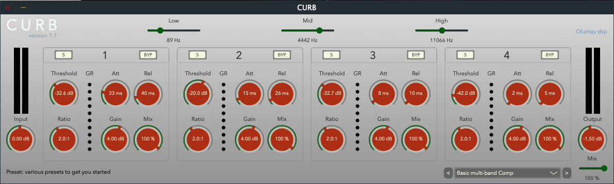

CURB
A four-band dynamics processor for shaping frequency and dynamic response, with upward and downward compression.
Technical details and downloads
A multiband dynamics VST3 plug-in made with JUCE. Can be used to sculpt frequency and dynamic responses of instruments, offering solutions to creative and corrective mixing scenarios. The four bands allow for downward and upward compression. Each band can be soloed after processing or bypassed. Each compressor contains threshold, ratio, attack, release, gain and mix controls. Ratio settings above 1:1 produce downward compression, while settings below 1:1 produce upward compression. Along with the main mix, each band has a mix control that adjusts the balance between the compressed and uncompressed signals. Input and output meters display stereo information, while gain reduction meters display the amount of downward compression for each band. The crossover points determine the frequencies processed in each band. Presets provide starting points for different scenarios. All controls are fully automatable.